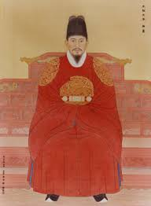

정조
"학문과 무예를 겸비한 개혁 군주, 조선의 마지막 불꽃을 피우다."

- 이름: 이산 (李祘) / 자: 형운 (亨運)
- 가족 관계: 사도세자와 혜경궁 홍씨의 둘째 아들. 비(妃)는 효의왕후 김씨
- 즉위 배경: 11세 때 아버지 사도세자의 비극적인 죽음(임오화변)을 목격함. 이후 영조의 명에 따라 효장세자(진종)의 후사로 입적되어 왕위 계승권을 확고히 함. 척신 세력의 극심한 방해와 암살 위협을 극복하고 제22대 국왕으로 즉위함.
- 재위 기간: 1776년 ~ 1800년
- 명언 (즉위 일성): "아! 과인은 사도세자의 아들이다." (종통의 엄격함과 부모에 대한 효심을 동시에 천명)
- 대표 업적
- 왕실 도서 보관과 학문·정책 연구를 담당한 ‘규장각’ 설치
- 국왕 호위 및 왕권 강화를 위한 친위 부대 '장용영' 창설
- 거중기 등 기술을 활용해 ‘수원 화성’ 축조
1. 정치 및 사상 개혁: 준론탕평과 명분론
- 준론탕평(峻論蕩平): 각 붕당의 무조건적인 연합을 추구했던 영조의 완론탕평과 달리, 각 붕당의 시시비비(옳고 그름)를 명백히 가리는 엄정한 정치를 추구함.
- 탕평의 확대: 소외되었던 남인(채제공 등)과 소론(서명선 등)을 과감히 정승으로 등용하여 노론 일당 전제화를 견제함.
- 문체반정(文體反正): 사대부들이 유희적인 글쓰기(소품문)에 빠져드는 것을 경계하고, 주자성리학의 전통적이고 바른 문체를 회복하도록 촉구함. 서학(천주교)에 대해서는 처벌보다는 유교적 교화와 교육을 우선시함.
2. 개혁의 중심 기구: 규장각(奎章閣) 설치 (1776년)
- 목적: 왕실 도서관으로 출발했으나, 홍문관·사헌부 등의 권한을 아우르는 정조의 핵심 정치·학술 보좌 기구로 육성함. 외척과 척신 세력의 정치 참여를 원천 차단하는 방어막 역할을 함.
- 초계문신제(抄啓文臣制): 젊고 유능한 관료들을 선발해 규장각에서 재교육하고 토론을 통해 개혁의 중심 인재로 키워냄.
- 파격적 인재 등용: 가문이나 신분의 제약을 깨고 이덕무, 유득공, 박제가 등 능력 있는 서얼(서자) 출신 지식인들을 규장각 검서관으로 발탁하여 적극 중용함.
3. 경제 및 사회 개혁과 신도시 '화성' 건설
- 신도시 화성(수원) 건설: 아버지 사도세자의 묘소를 수원(현 융릉)으로 옮기며 정조의 정치적 이상을 실현할 계획도시를 건설함. 새로운 성곽 축조 기술을 도입하고 국영 농장인 둔전을 설치함. (향후 1804년 세자에게 양위한 후 상왕으로서 머물고자 했던 행도이기도 함).
- 통공 정책 (신해통공, 1791년): 시전 상인들이 가졌던 독점 상업권인 '금난전권'을 폐지하여, 난전(자유 상인)의 활동을 보장하고 물가를 안정시킴으로써 경제 활성화를 도모함.
- 재정 일원화: 궁방의 토지 일부를 백성에게 돌려주고 국가 재정을 호조로 일원화하는 방안을 추진해 국가 재정 건전화를 꾀함.
4. 만년과 최후
- 만천명월주인옹(萬川明月主人翁): 만개의 천을 비추는 밝은 달과 같은 존재, 즉 백성을 사랑하고 변화시키는 '임금이이자 스승(君師)'으로서의 무거운 책무감을 스스로 자처함.
- 최후: 1800년 수많은 개혁 구상을 남겨둔 채 갑작스럽게 승하함(향년 49세). 능호는 건릉(健陵)으로 경기도 화성시에 있으며, 아버지 사도세자의 융릉 옆에 나란히 안장됨. 정조의 사후 조선은 외척들이 권력을 독점하는 '세도정치' 시기로 접어들게 됨.